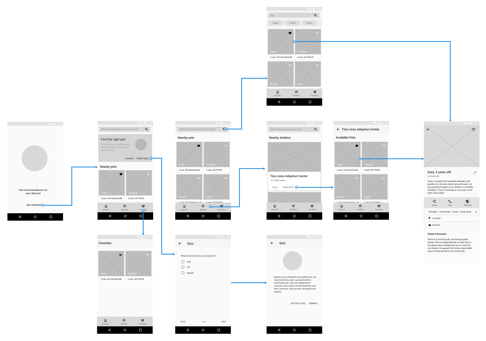

Google Design Exercise
Conceptualized and designed a solution for helping adopters connect to the right pet based on their lifestyle and preferences

- Task: Design an experience that will help connect people looking for a new pet with the right companion for them. Help an adopter find a pet which matches their lifestyle, considering factors including breed, gender, age, temperament, and health status.
- What I did: Stakeholder mapping, interviews, persona creation, survey, competitive analysis, sketching, wireframing, high fidelity prototyping
On receiving the design exercise, my first steps were to understand the problem space, stakeholders and frame the context. To develop solution(s), I had to first get to the root of the problem. By interviewing adopters and shelter staff who can be regarded as Subject Matter Experts (SMEs), I was able to frame the context of the problem statement in a better way. After understanding the problem, I explored a few design solutions and subsequently validated them. Narrowing down to one solution, I then focused my attention to the details of the system and how it could solve the issue at hand. You can find a thorough explanation of my process below.
——
UNDERSTANDING THE STAKEHOLDERS
I created a stakeholder map to understand the relationship between various individuals involved in this problem space. I identified the primary stakeholder as individual(s) wanting to adopt a pet. Secondary stakeholders were identified to be shelter workers, the individual's children at home (and existing pets) as they were crucial factors in the decision making process. Tertiary stakeholders were individuals who had a lesser influence on the decision making process. These include landlords, senior citizens (at home) and friends.
——
UNDERSTANDING THE PROBLEM SPACE
In order to uncover the true nature of the problem, I looked into the reason why the problem persists. Some of the initial questions that came to my mind were as follows -
- How do animals land up in shelter?
- How do shelters and foster homes operate?
- What is the typical adoption process?
By talking to staff members from three different animal shelters in India and the US, I understood the root cause of the problem. Animals ended up in shelters because of three primary reasons — individuals were moving houses and could not take their pet(s) with them or the pet(s) belonged to an invidual who passed away or the animals were rescued from negligent owners/ from the environment. Further, I understood that foster parents were a temporary means of caring for an animal, which was recovering from an injury or a medical procedure. Thus, the shelters are responsible for including animals in foster care, on their website.
——
UNDERSTANDING THE PROCESS
To gain a complete understanding of the whole adoption process, I looked at the process mentioned on various pet adoption websites. Additionally, interviewing three different shelter staff members made me realize that each adoption center differs in their process. This difference was also evident in shelters across countries. However, the initial stage(s) of the process were more or less similar across shelters globally. Considering my access to resources (shelters and shelter staff members, previous and new adopters), I decided to focus on shelters across the US only. By narrowing down my scope due to the availability of richer data, I could focus on a particular demographic and dig deeper to develop a robust solution. My next steps were to map out the adoption process and discover pain points for new adopters as well as establish a timeline of events.
——
FRAMING THE CONTEXT
Mapping out the adopter journey highlighted the stages in the process that require a lot of time on the adopter's end leading to friction in the process. Moreover, beyond the Search stage, there were a lot of variations in the adoption process across shelters. Hence, I interpreted the problem statement as designing an experience to reduce friction and save time for adopters in the Search stage only. My work will address the needs of adopters only for the Search part of the process for the region of the US. Designing a global experience would require all of the shelters to agree upon a similar adoption process.
——
INTERVIEWS
To learn about the adoption experience and to uncover details about the search process, I conducted four semi-structured interviews who had adopted either dogs or cats. The research questions revolved around four themes - Motivation (motivation to adopt as opposed to buying), Knowledge (procurement of knowledge about shelters and animals during the search process), Experience (adoption experience) and Concept (ideal system features). It was interesting to note that all the adopters were aware of the benefits of adoption over buying an animal. Key insights from the interviews were as follows -
- Individuals shared pets they found interesting with their partners through texts
- To contact the shelter, individuals preferred calling them as opposed to emailing them
- Photos (on website/ social media) were crucial in drawing the individual's attention to the pet
From the interview data, the following two personas became evident. These personas were meant to guide the design process ahead and were crucial for making design decisions.

SURVEY
Gaining insights through interviews about the adoption process and learning where existing systems are not able to meet the adopters' needs was really useful to scope down the problem. In order to determine which factors are important for adopters while considering a pet, I relied on a survey. The survey also helped me understand the methods and the tools/ techniques used by adopters during the Search process. Gaining this information was important to design the feature set of the system. After filtering out the partially answered surveys from over 120 responses, I analyzed the data from 85 respondents and found the following shared trends and insights —
- Over 94% of the respondents had either adopted a cat or a dog or both
- Struggles during the searching phase were lack of information about the pet (temperament, compatibility with cats/ dogs/ children), missing the shelter's contact information and lack of pet photos
- Individuals resorted to bookmarking in browsers and using physical notes to keep a track of the pets viewed
- Individuals looked up shelter information using Google maps and contacted them via calling/ texting/ emailing
——
COMPETITIVE ANALYSIS
I looked at existing systems that help adopters find pets to find out their strengths and weaknesses. I classified these systems under three categories -
- Search based: Websites like Petfinder, Adoptapet, Petsmart, Petco that find pets up for adoption around a zipcode
- Quiz based: Websites like Pawslikeme and Petango which recommend pets based on a questionnaire
- Matchmakers: Apps like Zeppee, Barkbuddy and Puppylove that let you get matched with nearby pets in a card based (Tinder-style) interface
Search based systems provide the simplest functionality for potential adopters to search for pets on factors like gender, age, size around an area specified by the user. This functionality is perfect for a user like Leia who can search for a pet based on her preferences. Quiz based systems help recommend pets by asking users to fill out a brief questionnaire to get to know their personality. Han would find such a system to be really useful as he does not have a strong preference for any of the pet attributes. Matchmakers work proactively by learning which pets are being liked by the users and displaying similar pets. A user would have to go through a lot of pets before such a system learns and starts displaying pets preferred by the user. This method would slow down the entire process of helping an adopter find a pet.
——
VISUALIZING THE IDEAL SOLUTION
Insights from the user research phase, brought up three key words to describe various aspects of the problem — Search, Discoverability and Matching. Search refers to the users's ability to search for an animal, Discoverability refers to the system's ability to help users discover animals and Matching refers to the system's ability to recommend an animal by matching its attributes with the user's preferences and lifestyle. These were supposed to be the three main pillars of my system.
A question I pondered upon for a while was — who was building this system? Was it a non-profit organization? A private entity? A government organization? Google? I realized that both the problem statement and Google's mission were about organizing information and making it accessible and useful. For this very reason, I assumed that it was Google who was building this system.
——
DESIGN EXPLORATIONS
I explored three different solutions for developing the system and weighed their pros and cons.

It appeared that designing the system as an app would be the ideal solution. Interviewees had expressed that calling/ emailing shelters, after seeing their contact information on a website, was a bit cumbersome. An app would alleviate that problem by providing call to action buttons for contact information. By clicking on the location of the shelter, users would be able to see timings and view directions with help from Google Maps. By utilizing the environment of Google products via Maps and Gmail, an app would reduce some friction for the user. Discoverability would also receive a boost as the app's location services could help the user discover new pets nearby, providing them with more of the available information.
——
DEVELOPING THE KEY FEATURES
The feature set for my app was developed from the data obtained through interviews, survey and competitive analysis. As this app was meant to serve both the personas - Han and Leia, I had to make design decisions based on their goals.
Navigation
The adopters I had interviewed mentioned searching for animals using attributes (breed/species) or by visiting a shelter's catalog. Adopters also mentioned bookmarking animals so that they could revisit them later. Thus the main views for the app were categorized as Animals (Home), Shelters and Favorites. As there were three important top-level views, I decided to go with a bottom navigation bar for switching between views. This turned out to be the most ergonomic option as well.
Search and Recommendation
Considering Leia and Han's goals, it was evident that the app should simplify Leia's search experience and guide Han to find the right pet for him. I played around with the idea of including a quiz during onboarding to display results of animals suitable for the users, based on their answers. Another exploration was to have a quiz that would recommend Han him the right pet, but would also allow Leia to search for an animal directly. I validated this idea by asking adopters their confidence level (via survey) in search results displayed by each of the three methods. From the survey report, I realized that close to 75% of respondents would be the most confident when searching for animals by themselves. Thus I decided to leverage this and converged Han's and Leia's journeys in the app.
Pet Profile
The interview insights showed adopters consider the following factors to be important in the decision making process — age, size, coat length and breed while they are flexible on the color and gender aspects. Adopters also were interested in knowing the animal's temperament, health status, reproductive status and compatibility with dogs/cats/ children. Thus I decided to show this information up front with an option for the user to dig in deeper, if needed. I also looked at pet adoption websites such as Petfinder and local shelters' websites to see how they display a pet's bio.
Onboarding
I wanted to excite the users about the experience of using the app. As adoption is a stressful experience, I decided to use some playful illustrations to help educate the users about the app's functionality. I decided to go with the Top User Benefits model as the app was tackling a new challenge.
——
TESTING THE PET PROFILE PAGE
Having known which information to display on the Pet Profile page, I decided to explore two variations for the UI. One of the options was modeled after the view as seen in the Play Store (Option A), while the other view (Option B) was inspired by Google Maps and the Airbnb app. Option A showed the pet's information up front with call to action buttons at the bottom while Option B showed a brief description followed by a row of buttons. I put these sceens in front of the adopters and asked them to choose one option. Majority of the users preferred Option B as they found the call to action buttons, especially Share and Call, to be really useful. Thus, I decided to proceed ahead with option B.

——
WIREFRAMES AND USER FLOW
As the pieces fell in place, a logical flow got established. I moved to Sketch to work on my wireframes and to map out the user flow. This stage was crucial in determining the information architecture which would pave the way for feature placement. To offer an experience similar to a Google product, I looked up the UI elements and behavior of Google's apps. My designs were inspired by the card layout as seen in Google Trips and the Airbnb app on Android, while the pet profile page was inspired by Google Maps and Airbnb results pages. I picked up ideas for bottom navigation bar and search bar from Google Photos.
——
FINAL MOCKUPS
My goal was to create a delightful experience for Han as well as Leia. Picking the color scheme and imagery was an important factor in how the app would be perceived by both. Playing around with a few color schemes on Color Tool, I decided to go with a shade of blue as my primary color. This tool also allowed me to check for basic accessibility such as legibility of text, which helped me present my content in a better way. Images were sourced from Unsplash while the illustrations were used from Katerina Limpitsouni's work. The final screens were designed in Sketch by following the Material Design guidelines.


You can play with the prototype here
——
REFLECTING ON MY WORK
While the solution has been developed considering the users' primary needs(in the US), there are a few potential limitations and hurdles that the solution faces before it can offer a global experience for a large scale audience.
- An app is limited to a smartphone/ tablet. Developing a website along with the app would be an ideal solution to make this system accessible to a wider audience
- People with limited storage on their smartphones or lower end smartphones (in developing countries) probably can not afford to download such an app
- Media (photos/ videos) will not load properly/ efficiently for individuals on a 2G/3G connection. Loading the essential and primary items first should be a priority in that case.
- To cater to a large audience, the app should support various languages (and translation wherever necessary)
It was an exciting and fun experience to work on this problem. I am grateful to have had the chance to work on this exercise as I got an opportunity to learn new things and polish my skills.